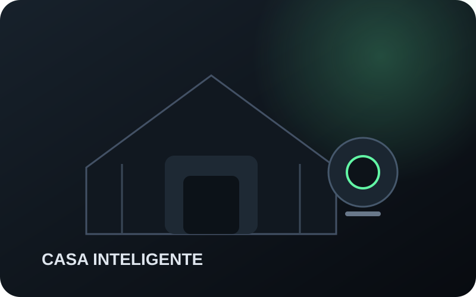

Mouse gamer
G305 ou G203: wireless ou simplicidade com fio?
Autonomia e liberdade de mesa de um lado; menor peso, conexão direta e zero preocupação com bateria do outro.
Ver a comparação →A Córtex transforma ficha técnica em decisão: para quem faz sentido, o que realmente muda o uso e qual trade-off você precisa aceitar.

Quatro contextos para reduzir ruído e chegar mais rápido a uma decisão de compra.



Autonomia e liberdade de mesa de um lado; menor peso, conexão direta e zero preocupação com bateria do outro.
Ver a comparação →Portabilidade, tela, chamadas e armazenamento antes de escolher pelo processador isolado.
Explorar →Uma ordem de prioridades para não gastar com extras antes do que muda a experiência.
Mobilidade, autonomia e compatibilidade transformadas em uma decisão de uso.